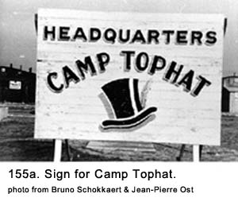
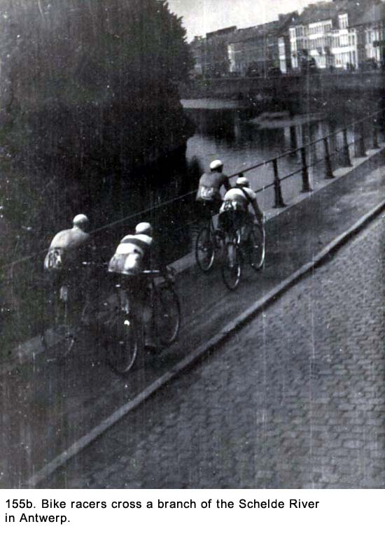
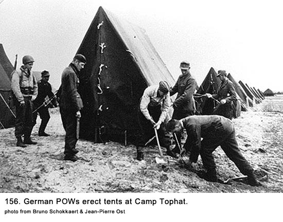
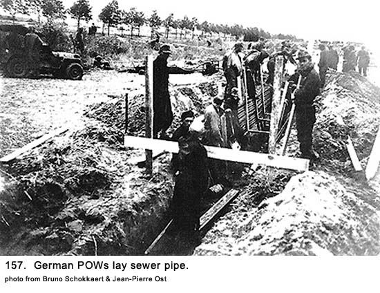
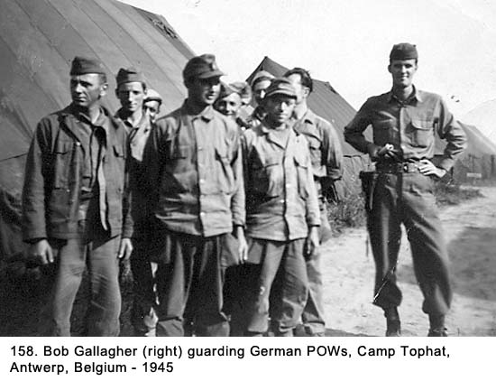
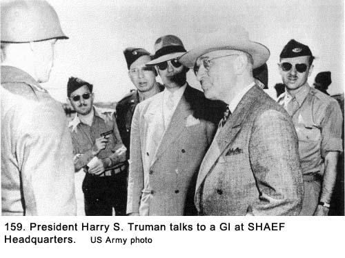
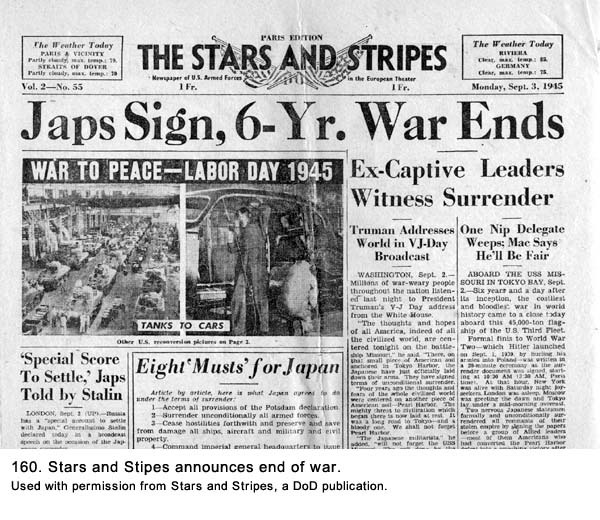
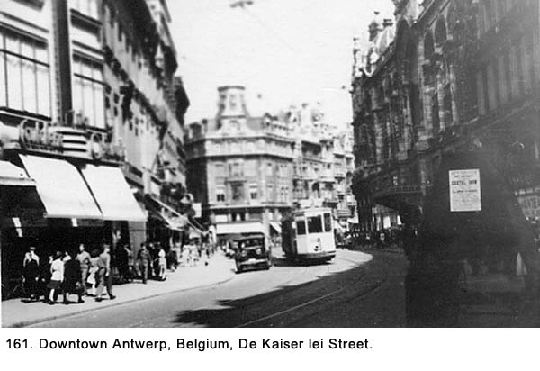

|
Table of Contents < - - - return Chapter 26 < - - - next
World War II Story by Robert F. Gallagher Chapter 25 - Camp Tophat, Antwerp, Belgium There is no substitute for victory. _______________________ Our Last View Of The Destruction of Germany We passed through Regensburg, Nuremberg, and Wurzburg, all battered towns we had seen before. There were many completely or nearly totally destroyed. We thought again, how can these towns ever get back to normal? However, for the first time, we began to see signs of people trying to clean up their communities. Lines of people were set up to pass bricks, pieces of concrete and other debris from person to person until they finally reached some horse drawn dumpster. There were workers with shovels removing debris from sidewalks and from bombed buildings. The labor force consisted almost entirely of women, and everything was being done by hand. We began to see more civilians than when the war was in progress, and it was amazing so many of them still remained despite such devastation to their homes. As we passed through a town, women pushed their children up to the edge of the road to beg for candy. They had learned the words chocolate (they pronounced it chok-o-lot) and gum and sang them out as we passed. This was a change, during the war the civilians ignored us as we rode through their towns. We ran out of our supply of candy in a hurry and began throwing gum and the small sugar packets accumulated from when we were living on rations. We had a lot of these items left and we realized we would never use them. Finally, only Stevens had anything left and he continued to toss things to the children. "I thought they would like these chlorine tablets," he announced with glee. "You dumb idiot," cried Armbruster. "You could kill them if they eat those things. What the hell's the matter with you." Dillon knocked the box out of Stevens's hand and we all took turns chastising him. We looked out the back of the truck and saw children down on their knees retrieving the tablets from the shoulder of the road. We were reminded Stevens continued to do stupid things on a regular basis that in some cases, like this one, could have dangerous repercussions. The first night out we bivouacked near the town of Ashaffensburg, Germany. It was more a pile of rubble than a town. The GIs who manned it called the tent city area where we stayed Camp Lucky. How ironic; there was nothing lucky about the town or any of the area around it. The next day we crossed the Rhine River on a steel truss bridge the American engineers had built to replace the pontoon bridges that were hurriedly constructed soon after the initial assault across the river. We passed through the town of Oppenheim, where the Third Army had made their first crossing of the Rhine River as they advanced into Germany. We then passed through Mainz and the next night we stayed at the town of Tier, where we slept on our trucks. The next morning, we passed out of Germany, through Luxembourg, and into Belgium. One of the most interesting towns we saw was Bastone. This was the site made famous in books and movies years later as the location where the Americans held out against insurmountable odds when the German army made their last major counteroffensive into the Ardennes Forest. It was Hitler's last desperate effort to stop the American and British advances from the west. He threw most of his reserved divisions into the Allied lines with the intent of cutting their forces in two and advancing all the way to Antwerp, Belgium. The Germans called the operation Watch on the Rhine. The Allies had later referred to it as The Battle of The Bulge because of the indentation it made in the front line of battle. There, in Bastone, General Anthony McAuliff responded to the Germans' order to surrender with a one-word reply: "Nuts." It was considered the pivotal point in stopping the Germans advance and the start of the Allied counterattack. The town looked like a lot of other damaged places we had seen, but here, there were many troop-carrying gliders lying about. From the condition of many of them, it was obvious a lot of Americans had died. We passed through several towns including Eghezee and Louvain (or Leuven). The Belgian towns were not nearly as damaged as those in Germany. We realized again that even though major battles had been fought in these areas, the devastating damage to cities, like we had seen in Germany, was done by Allied bombings. With all the heavy fighting and shelling that took place in Bastone, the destruction paled in comparison to a city like Nuremberg. We arrived in Antwerp, Europe's second-largest port city, on a sunny afternoon. We had to go through the busiest part of town in order to get to the camp. A large crowd of people lined both sides of the street. Many of them were waving and cheering. At first, we thought we were getting a hero's welcome. Then we noticed it was not us that they were watching. There was a bicycle race going on, and we were in the middle of the contestants (See Fig. 155b). Oh well, it was a nice thought.  We arrived at the outskirts of Camp Tophat (See Fig. 155a), our final destination. Officially, it was known as Headquarters, United States Staging Area, Antwerp, Belgium, A.P.O. 562. It was a huge tent city set up to process American troops who were either going back to the States or to the Pacific Theater of Operations. As we approached our final destination, we were about to participate in one of Captain Mc Kee's grand adventures. His presence during convoys always brought back unpleasant memories. We resented his egotistical dispensing of the rules of military courtesy while training in the States and wondered about his priorities while in the ETO. He was about to put icing on the cake. McKee decided since all the trucks were now equipped with radios, he was going to use them for maneuvers. During the convoy from Germany, he had used them to give orders for certain trucks to turn, stop, change positions, etc. He now planned on having all the trucks turn off the road and into an open field near the camp in a prescribed military manner. The site was to be our new gun park. He gave each truck a number before we left Straubing, and the drivers were warned, not to forget it. The plan called for the first ten trucks to turn off the road at the same time at a right angle to the road. The following ten trucks would follow behind the first batch, upon command, followed by the next ten and so forth. Again, he was playing at some kind of a military game that did not make sense to us. When we got alongside the field, he gave the first command, "Trucks one through ten, by the right flank, turn." We were one of the ten trucks, and we headed into the open field. It turned out the field was a peat bog, and all the trucks began to sink into the ground. While the drivers immediately realized the problem, there wasn't much they could do about it. With the guns attached to the rear of most of them and trailers to others, it was impossible to back out. In just a couple of minutes, our truck had sunk down over its wheels. The two trucks to our right were in deeper than that. The next ten trucks behind us had started in but most of them were able to stop when they saw our predicament. At first, we just sat there in disbelief as we could feel the truck slowly going down. Finally, we realized we had better get out of there and started to throw our personal things out of the truck. We followed after them. We thought we were about to sink into a deep swamp and we were bailing out to try our luck on foot. We picked up our gear, and headed back to the road in panic mode. Every step we took made a loud sucking noise, and we would sink in up to the top of our boots. When we reached the road, we stood there and watched the truck drivers struggling. We didn't know whether to laugh or cry. Dillon said to me with great irony in his voice, "Captain Bowlegs has struck again." Some of the trucks still up on the road immediately began to use their winches to pull the trucks and guns out of the bog. There was near hysteria as officers and high-ranking noncoms showed up to shout commands and offer conflicting advice. It was such a unique experience that no one knew precisely how to handle it. Most of the trucks had been buried to the tops of their wheels, but several were in so deep I don't know how they ever got them out. After several hours most of the trucks were still stuck. Some empty trucks from the camp arrived, and we loaded up on them with our bags, rifles, and other equipment. As we left, our truck driver, Grimes, was still out in the bog, using up all his swear words. He joined us in the camp about twelve hours later looking like he had been dragged through a swamp, which, come to think of it, he had. He arrived after we had retired in our new quarters and his ranting woke us all up. He was livid. All I could think was: I hope he doesn't start expounding how someone out to kill that dumb sonofabitch like he did with Lieutenant Kraft in St. Goar. This time, the wrong person might hear him. It might have been our imaginations, but we seemed to see very little of Captain McKee around Camp Tophat after that incident. A Winner Of A Camp We soon learned this place had all the luxuries of a camp in the States. There were barbershops, movies, post exchanges, ice cream parlors, tailors, beer halls, moneychangers and a post office. The camp was divided into three areas, with one for those men who were being sent directly to the Pacific Theater of Operations, another for those going back to the States, and a third for the permanent cadre in the camp area. We were assigned to the third group, which made us very happy. Many of those men going to the States were to be sent on to the Pacific after a furlough at home, but they did not know it at the time. The ones making the direct route were the most unhappy GIs I had ever come across. I ran into a bunch of them one night in Antwerp and among their gripes, they listed a dozen reasons why it should have been someone else who should be sent before them. Most of the ones I met had seen a lot of action already and they felt it would be fairer to send men who had little or no contact with the enemy. They were absolutely right in their judgment but that wasn't how the Army worked. We felt as though we had really lucked out by being stationed in a camp with many amenities and located near a major city. The camp was west of Antwerp, with an automobile tunnel under the Schelde River connecting it to the city's downtown area. Of equal importance, we were only a short distance from some of the more desirable tourist spots in Europe, including Brussels and Paris. Guarding German POWs In camp we lived in large, black tents that held twenty people each, and there were hundreds of them. The officers' billets and headquarters were in Quonset huts. We slept on army cots and we lived out of our duffel bags. We were told our duties would be taking German prisoners of war around the camp on work duties jobs (See Figs. 156 and 157). We began to refer to them as POWs or just plain Germans instead of the more derogatory names like Krauts and Jerries we had used during the war. However, the civilians we met in Belgium and later in France still all referred to the Germans as the Boche, and just like the young girls we had met earlier in Luxembourg, the emphasis they put on the word made it sound like they were talking about someone for whom they held great contempt.   The prisoners who were to perform work details in Camp Tophat stayed at another camp nearby, and they were delivered and picked up every day by GIs from an infantry outfit that guarded them. Our new duty sounded pretty good to us, and it sure beat going to the Pacific Theater of Operations. Some of the tents were made into mess halls, and the cooks were serving some very good food. We started to get fresh fruit and vegetables and fresh meat. The milk was still being made from powder but, at least they cooled it down some, which really enhanced the taste. Five days a week, I would be assigned about
fifteen POW's to take on work details. We would go around the camp, and I
would have them put up tents, fix others, rake the area, do KP duty, make
minor road repairs, and other menial tasks. The GIs who were passing through had no
duties to perform. I wore a .45-caliber pistol with ammunition and a holster
on a gun belt (See Fig. 158). I always had one German with me acting as
interpreter. He would be excused from work, so I spent a lot of time talking
to him. One of these interpreters gave me the first idea I had about going
to college when I got back home.  Most of the prisoners wore some type of the Wehrmacht uniform but there were also some Panzer (Armored Unit) and a few Waffen SS men (Germany's elite troops.) among them. The ages of the prisoners varied from about fifteen to seventy years old, but most were in the same age bracket as the American soldiers. Many of them had seen some long and brutal battles. Some had been in the army for ten years or more. The very old and young ones were usually new recruits, and they seemed to still be in a state of shock about their experience. One young man, about fifteen years old told me through the interpreter that about a week before the end of the war, trucks pulled up to his secondary school, and all male students were sworn into the army, loaded up, and sent immediately to the front line to fight. He was given a rifle and taught how to load it, but he never fired. The day after he was conscripted, he was in a trench. The next morning, when daylight came, he and those he was with surrendered when they observed British tanks behind them. The older prisoners seemed to be able to keep up with the younger ones, but it might have been more of an attitude thing. Sometimes, the younger ones tried to goof off, while the older ones did not want to get into trouble and were more resigned to taking orders. Overall, we had no serious trouble with them, but there were a number of minor incidents. None of the prisoners tried to escape while we had this duty. However, I don't think keeping them from escaping had anything to do with our good soldiering. They were being fed, billeted, and clothed. Even though it was far from ideal circumstances, they knew the situation was much worse back in Germany, and they seemed to be in no hurry to get there. They knew that many people were starving back in their homeland because most of the relief aid had not yet been fully implemented. They talked about being anxious to rejoin their families, but I think in many cases it was just lip service. Also, the fact they had lost the war may have had a lot to do with it. There would be no returning heroes to be honored, parades to acknowledge a job well done, or benefits to be distributed. They were the losers, and that fact alone may have made it difficult to go home and face the people of their hometown whose leaders had led them to hold in such great expectations from their military men. The prisoners wanted to know the specifics of the damage sustained by some of their hometowns, where we had been. They did not like to hear the usual answer: "It was totally destroyed." We would end these conversations by saying: "Germany is kaput," "Hitler is kaput," or "Alles kaput." When I told the interpreter I was from Chicago, he translated it to the other German prisoners and several of them held their arms out in front and make the rat-a-tat sound of a machine gun as they all broke out in laughter. Most of them new little English but they all seemed to know the words Chicago, gangster, and Capone. Many of the prisoners were interested in America and, through the interpreter, would ask many questions about our cities and cultures, especially movies and music. The prisoners we got to know were not much different than the GIs we knew. They did not appear to be the cruel monsters American propaganda had led us to believe they were. This made it difficult for us to understand the terrible things that had happened at the hands of the German people. The leaders alone could not have done the dirty work alone. Were some of these prisoners the men who had done everything in their power to waste the GIs they had met? Did they subject our country's POWs and many civilians to unspeakable crimes in slave labor camps and other places of internment? If so, how could they look so normal to us? Despite our mixed views, our feelings toward the German prisoners were pretty neutral. We didn't hate them, but we refrained from getting too chummy with them. We did not yet know a lot about the atrocities the Germans had committed. We had only seen from a distance some of the camps with their inmates. Most of the more horrendous information came out a few months later, or at least, we didn't hear about it until then. Also, we had seen so much death and suffering in Europe that all stories about death camps, slave labor camps, atrocities, deaths inside prisoner-of-war camps, destruction of cities with their civilian population and military deaths were all lumped together. We had become very jaded about the horrors of suffering and death. One way of dying or suffering was not looked on as being any different than any other. We made no effort to read up on or to become informed about these subjects. It was easier to put it out of our minds as much as that was possible. We looked at the prisoners as the enemy from the war that was now over. Also, the attitude toward the Germans, prisoners and civilians alike, had a lot to do with our exposure to them during the war. No one in my outfit had been killed or wounded by them. In contrast, the infantry unit guarding them when they were not with us treated the prisoners in Antwerp much more harshly. This outfit had seen a lot of action from North Africa on through Europe, and, without asking but judging from their campaign ribbons, I'm sure they had many casualties. That created a whole different attitude. From what they told us, they hated all Germans and the prisoners more than the civilians. They were ready to hand out severe punishment if any of the prisoners got even slightly out of line. As an example, at the end of a workday, we brought the prisoners to a central location. There, they were counted and loaded on trucks with infantry guards and sent to their camp. Before they boarded the trucks, we searched them. I had never searched anyone before and I was doing it on the first day we had that duty. I noticed that one of them, an interpreter, was trying to pull away from me as I felt around his back. I made him stand still and I found he had a woman's makeup compact hidden in his belt in the middle of his back. It contained butter from the mess hall where the prisoners had been doing KP that day. I didn't think too much about it other than he should not have done it, but the infantry soldiers reacted quite differently. They tied his hands behind his back before loading him on the truck. The next day, I heard from another German interpreter that the fellow who stole the butter got three days in the hole. It didn't sound very good, and, from the way the other prisoners referred to it, wasn't the place to be. When the POW returned to our work duties, he would not even make eye contact with me. When he arrived with the other POWs in the morning for duty, he would make a point of moving away from me so he would not be assigned to my group. There were other incidents where we heard severe punishment had been handed out for minor infractions. This created a small problem for members of our unit. Even though we had no reason to protect the prisoners, we sometimes hesitated in turning them in to be punished when the violation was minor. Things like stealing an orange or a piece of fruit out of the mess hall was a fairly common occurrence. Did you turn him in or not? The harsh treatment passed on to the prisoners for infractions made us hesitate to do so. For example: the twenty-man tent where I lived was right next to the kitchen where all of the meals were prepared for our unit and another battalion that did guard duty. When the side flaps of our tent were rolled up, we could look right into the mess hall. We could see the German POWs on KP duty preparing meals under the guidance of the kitchen personnel, who were GIs. One day, between meals, we heard a lot of commotion over there and went to investigate. Three prisoners had been caught stealing food and they were being punished on the spot. The three had been brought into an empty tent where a table and chairs were set up. A large number of spectators had shown up to watch. The men were sitting at the table with a one-half gallon can of peanut butter sitting before each man. As their punishment for stealing, they were being required to eat a full can with a tablespoon. By the time we got there, they were about a third of the way through and, were throwing up all over the place. Their faces were twisted in agony. It was very painful to watch and appeared extremely cruel. We stated our distaste for what was going on to the infantry soldiers who were dishing out the punishment but they just laughed at us. There was a first-sergeant among them, and he told us to keep our mouths shut. We finally left and never found out how the matter was concluded. Another time, I was lying on my bunk reading when one of my bunkmates called my attention to a small frog, about the size of a quarter, hopping down the aisle between the rows of bunks. I figured it would probably wind up in someone's bedroll so I got up to get rid of it. I took a stick and putting it down next to the frog, started to golf it out of the tent. As I got to the door, there was a German POW interpreter standing there. He saw what I was doing and he yelled at me, "You beast, you beast!" I was dumbfounded. Was this really one of those sadistic Germans, we had heard so many horrible stories about, calling me a beast for moving (not killing) a mere frog? Before I could get my wits about me to hit him, one of the infantry GIs standing nearby, who had heard what went on, attacked the prisoner. It wasn't a pretty picture. They came and took the badly bloodied interpreter away, and I never saw him again. I made a point of not asking what had happened to him. There were some black soldiers being processed in Camp Tophat along with the other GIs, and it was puzzling to see how they interacted with the German POWs. They acted as though they were meeting long-lost relatives, and tried to befriend them as much as they could. They wanted to give them cigarettes, candy, and even liquor. We, as the guards, knew the prisoners were not supposed to get these items, but we sometimes had a hard time keeping the two groups apart. Perhaps the black GIs felt some kinship with the German POWs because they thought they, too, were being discriminated against. They may have seen some similarity in the way they were segregated from the white troops and were treated subserviently. The black GIs were not allowed the freedoms of the white soldiers and they probably pitied the German POWs who were also being forcefully constrained. We often discussed why this was happening but never came up with an answer we had one hundred percent confidence in. The attitude of the black soldiers was even more incongruous when we considered the Nazi government was so blatantly racist. An ugly incident resulted from this illegal pampering when a lieutenant from the infantry unit that guarded the prisoners came upon the mixing of prisoners and black soldiers. One of my friends was in charge of some prisoners, and he had them tightening up the ropes on tents. Several of them had been called into a tent where the black GIs were being billeted, and they were giving prisoners cigarettes and alcoholic drinks, among other things. We suspected the lieutenant had been alerted to the situation by one of his enlisted men because we seldom saw officers around the areas where work details were taking place. My detail of POWs was working in the same area, so, when I heard the loud talking, I went to investigate. When I arrived at the tent there was a lot of commotion going on and the lieutenant was threatening court-martial to the black soldiers. He was also yelling at my friend for not keeping the two groups apart. The prisoners involved were immediately taken back to the infantry camp where they were punished, but I never found out what happened to them or the GIs. The incident with the lieutenant did not stop the problem because there was no change in the way the black GIs acted toward the prisoners. About a week later, I had to stop some of them from giving cigarettes to POWs in my detail. The pattern continued because frequent turnover in troops brought in people who had not heard of the incident with the lieutenant. The bigger question was still what made all of the black GIs act so friendly to the recently defeated enemy? One of the prisoners in my detail on a regular basis had been in the Waffen SS Panzer Division, Hitler's elite combat troops. He wore an all-black uniform, black leather riding boots, and had a six-inch scar down the side of his face. He looked very sinister, and the uniform added to his image. He looked like the villain from a Hollywood movie. When the prisoners were working, some of them would get some distance from me. Almost every day one of the transient GIs would come up to me to report this tanker was loose. It was interesting because they never said anything about any of the other prisoners. The fellow with the scar was really a very amiable person whenever I was around him and I talked with him on a number of occasions. Despite his looks, his personality did not come close to matching the stereotype of an arrogant and sadistic SS trooper as depicted in movies I had seen. If he was acting the part, he was doing a very good job. The only hint of his military training came when he reacted to any command I would give the POWs. His movements were quick, mechanical and resolute, including a clicking of the heels. He told me, through the interpreter, he had been in Lutheran Divinity School before the war and he was going back after he got home. One day he came out from behind an empty tent, carrying a handmade shoulder holster with a loaded Army .45-caliber pistol. Someone had thrown it out when he was ready to ship out of the camp. I now had two .45's. I had bought one from a GI for $15 just a few days prior. When I got ready to return home, months later, I sold both of them. We were being warned about the dire consequences of being caught with Army equipment but the German Luger pistol I had picked up in Alzey was considered a trophy, and I kept it. Honor Guard For President Harry Truman On July 14th, we were told President Truman was going to land at an airport near Antwerp the following day, and our unit was going to be part of the honor guard that greeted him. Following his arrival, he was going to SHAEF (Supreme Headquarters Allied Expeditionary Force) Headquarters, which was located near Brussels. From there, he would be going on to Potsdam (a suburb of Berlin) to meet with Churchill and Stalin to make decisions regarding the division and occupation of Germany. The conference was to take place from July 17th to August 2nd and had the code name of Terminal. Officially it was known as the Berlin Conference. We brushed our shoes, cleaned our rifles, pressed our uniforms, and got everything ready for the big day. We put a mixture of oil and gasoline on our steel helmets to make them shine, but it also made them smell. At about 0600 hours the next morning, we were loaded up on our two-and-a-half ton trucks and driven out to see the President. We had all seen newsreels of the heads of countries as they deplaned on foreign territory. After being greeted by dignitaries, they would walk up and down the aisle between the honor guard soldiers, who were standing at rigid attention. We were sure that was what we were going to do. It wasn't. They deposited us on a country road in the middle of farmland, where we were spaced at ten-foot intervals on both sides of the road. We were so far from the airport we could not see or even hear the airplanes. Some genius had gotten the idea it would be a great tribute to the President to have soldiers lined up from the airport to SHAEF Headquarters. As far as we could see in both directions, there were soldiers standing on both sides of the road. We were all furious for being misled but, as usual, we just complained among ourselves. In keeping with the Army's unwritten motto of hurry up and wait, nothing happened for hours. By noon we had been there for almost five hours, and we had seen no one but each other. There was no traffic. We were all getting tired, restless, and hungry as we had not eaten since breakfast. Because the ground was wet, and because we did not want to get our neatly pressed uniforms dirty, we had been standing in one place the entire time. At about 1330 hours, Jeeps and command cars started to come by with officers leaning out yelling, "Present arms! Present arms!" This meant we were to stand at attention with heels together, staring straight ahead, and holding our rifle in a vertical position, right in front of us. After about fifteen minutes of being in this uncomfortable position, not having eaten since early morning, and because of the boredom of it all, we started to wear down. The vehicles with officers kept coming, and we heard the same call to attention several dozen times. The enlisted men were grumbling to themselves, "We heard you the first time," or, "Don't panic fellows, it's only the President." Finally, some weapons carriers filled with luggage and some other vehicles went by that seemed to indicate the guest of honor was not far behind. From the speed of the vehicles passing us, I realized I might not even get a view of the President when he went by, so I decided to turn my head to the left, which was the direction he was coming from, to get a better view when he passed. I had just made my move when the convoy stopped, and I got the best view in town. Sitting right in front of me, about twelve feet away, were General Eisenhower, President Truman, and Secretary of State James F. Byrnes. They were in an open command car, sitting three abreast across the back seat. Truman was in the middle, and he looked bored to death. None of them were doing any talking. Then, utter fear set in as I realized General Eisenhower was on the side of the car nearest to me, and he was staring directly at me. You would have to be an enlisted man to realize the significance of being the only one who was not standing at attention when you were looking at a five-star general. His title was Supreme Commander, Allied Expeditionary Forces, which would have even set a one-star general into a panic under similar circumstances. Ordinarily, an officer of Eisenhower's rank would not be looking for such an insignificant breach of military discipline as a soldier's head being turned away from the norm, but in this situation he was being forced into it. He had been riding for many miles from the airport looking at nothing but GIs standing rigid like store dummies. The President of the United States, seated on his left, did not seem to be offering up any conversation as a diversion. I immediately jerked my head to the front where it should have been, but I knew he had seen me looking to the side. I felt like someone who jumped off of a thirty-story building while his whole life flashes in front of him. Fortunately for me, the convoy started up, and they drove by without him making an issue of it, but Eisenhower kept staring at me until he passed. Truman was holding the brim of his hat and I somehow got the impression he thought observing thirty plus miles of GIs standing at attention along the road was as dumb a stunt as we enlisted men did. Or maybe he was thinking about what he was going to do when he got hold of the guy who put him in an open car with the wind blowing in his face (See Fig. 159).  On August 6, we heard the first atomic bomb was dropped on Hiroshima, Japan but we had no idea of its significance. Our news from around the world was still very limited. We had no radios, and the only newspapers came from the States and were always about a month old when we got them. We were not even getting a copy of the Stars and Stripes on any regular basis. On August 9, when the second bomb was dropped on Nagasaki, we began to get more particulars about the extensive damage that had been done, but there was no mention of the thousands of civilians who had been killed. We knew nothing about the term atomic bomb. We thought it was just some kind of a bigger bomb that did more damage. When we heard about the devastation to the Japanese cities, our thoughts went back to the many destroyed German cities we had seen. What could possibly be worse than that? There was no sympathy for the Japanese who died in the blasts, only hope the bigger bombs would bring a faster victory. We had all seen so much death, destruction, suffering, and misery not even the heavy toll resulting from the atom bombs could stir any sympathy. Also, we had been at war with the Japanese for almost four years and had been fed a steady diet of why we should hate them. At this point there were no good feelings about the Japanese, not even sympathy for their mass killing. At about this same time, we began to get more specific information about what would later be called the Holocaust. For those of us who had not participated in the liberation of concentration camps, news of them began to be made public only near the end of the war in Europe. We had known almost nothing about this tragic phase of a tragic war. Even the first reports we received were thought to be isolated incidents. It was not until some time later, primarily at the Nuremberg trials, that the full impact of what had happened hit us. Then I recalled seeing the horrible sight of emaciated bodies stacked up on hayracks in Frankfort some months earlier and wondered if there was any connection to the Holocaust victims. Japanese Surrender - War Ends On August 14th, Japan accepted the Allies surrender terms and World War II ended. We let out a huge sigh of relief (See Fig. 160). August 15, 1945, was declared VJ (Victory in Japan) Day, and on September 8th the official signing took place aboard the battleship Missouri. There were a lot of hoops and hollers in our tent, and everyone talked about getting a pass into Antwerp to celebrate. More than anything else, there were a lot of happy people who walked around for days with big smiles on their faces. We were all fed up with Army life, and were looking forward to being civilians again. It was like a huge weight being lifted off of our shoulders. With the end of the war, we could now look forward to going home, and that made us all very happy indeed. It also removed a heavy burden from our minds. When Japan was still fighting, there was always the possibility we would be sent to the Pacific Theater to be made part of the invasion force of their mainland. It was something we talked about frequently. The sudden end to that war took us all by surprise, as it did people throughout the world. Now, there was much interest in the big question of when and how they would select men to go home.  We each got a rating number based on a point system that determined in what order we were to be demobilized. Those with the most points would go first. While the Army used the word demobilized, we GIs liked the word discharged because it had a more permanent ring to it. We got one point for each month of service, one point for each month spent overseas, five points for each campaign star, five points for each combat decoration, five points for each purple heart and twelve points for each child under 18 years old.1 I believe that I had about forty-five points. I knew there were many soldiers who had more points than I did and it would be some months before I would be going home. Some of the statistics on to the horrible cost of the war came in later. In addition to the millions of deaths throughout the world, there would be no way of measuring the enormous numbers of wounded. The suffering and damage done to property was immeasurable. We had seen some of the damage and had been shocked by it, but it was only a small fraction of what had taken place. World War II was the most costly war in history by any measurement.
Military Police Duty We continued to pull our guard duty with the German POWs until September 20th when we left Camp Tophat and moved across the Schelde River into the central part of the city of Antwerp, where we were made into a Military Police (MP) unit. We were billeted in the offices of a factory once used to process diamonds. These were permanent buildings, and the accommodations were much nicer than living in tents. It had been a long time since we had lived in anything but, and we considered it a big improvement. The hardwood floors, heated shower rooms, and central heat made life a lot more comfortable as we headed into the winter months. The city of Antwerp had received less damage than to many of the other cities we had seen in Europe, and much of what had been damaged or destroyed had been cleaned up before we got there. There were some empty lots in the middle of heavily populated areas, which indicated buildings had recently been there. The civilians told us some of the hardships encountered during the German occupation and, later, the battle for the city. One of the worst parts was the constant rain of V-2 rockets the retreating Germans sent down on the city after they had been driven out by Allied troops. They caused a great number of civilian casualties. The civilian population also suffered food shortages for a long period of time. Most of the shops were now open, but there was a shortage of goods to be sold. Rationing was still in effect, and people had to stand in long lines in front of food stores. Some cafes were open but served a limited menu. Most of the people seemed to be moving about in a near-normal atmosphere. The electric-powered streetcars were operating and doing a big business. Because there were not many automobiles, the streetcars were usually overcrowded. On many of them, people hung out of the doorways. GIs could ride free, but because of the crowded conditions we seldom did so. We walked or hitched rides on Army vehicles. Our billets were on Pelikaanstr, within
walking distance to the downtown area of the city, which made it easy to get
around. We were only two blocks from the main street in town, De Keyser Lei
(See Fig. 161). While we were there, there was a national political election
and the GIs were introduced to the difference between elections in the
United States and those in many foreign countries. There were near-riots in
the streets and some real riots in one of the city's main squares. We were
told to stay away from crowds of civilians, but it was sometimes hard to do.
However, whatever the cause of such excitement, none of the open hatred
between opposing political parties was aimed at us. The people were very
friendly and accommodating.  Antwerp was the diamond trade center of the world and just down the street from our quarters, across from Central (railroad) Station, men would ply their trade. On Saturdays, about a hundred of them would stand around outside of a particular building and haggle over the prices. Deals were consummated with a handshake. Things were beginning to look up for members of our battalion. Morale was high and complaints were at a minimum. The food continued to be good, living conditions had improved, inspections were at a minimum, there were no special details to perform, passes were plentiful, and we started to plan furloughs to the scenic spots of Europe. Chapter 26 < - - - next Table of Contents < - - - return _________________________ Footnotes and Source of Photographs. Copyright, Robert F. Gallagher, 1999 - 2015, all rights reserved on all images and content.
|